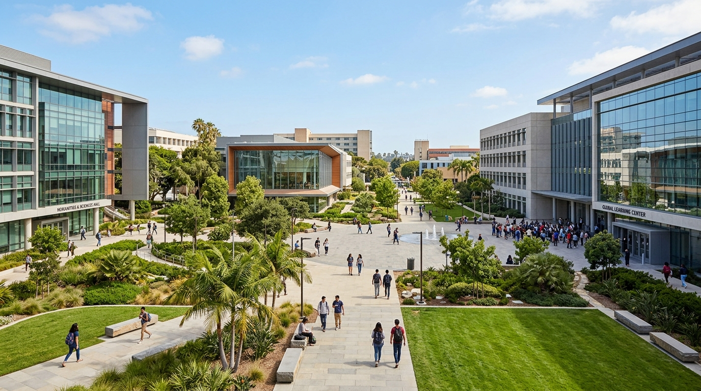

Fasilitas Kampus


Ruang Belajar & Riset Terpadu
Mulai dari lab sains bersertifikasi internasional sampai smart classroom berlayar interaktif, semuanya disiapin biar sesi diskusi dan riset kamu makin hidup dan ngena langsung ke dunia kerja.
- Laboratorium Komputer & AI Modern
- Kelas Cerdas Modular & Hybrid
- Akses Perpustakaan Digital 24 Jam
- Co-Working Space & Sudut Diskusi Nyaman

Pusat Olahraga & Kebugaran
Otak diasah, badan juga wajib segar! Kami siapin berbagai arena olahraga berstandar nasional buat kamu yang pengen latihan rutin, sparring bareng teman, atau tanding di turnamen kampus.
- Kolam Renang Standar Olimpiade
- GOR Basket, Badminton, & Futsal Indoor
- Fitness Center Lengkap & Studio Senam
- Jogging Track Rindang Dikelilingi Pepohonan

Asrama & Hunian Mahasiswa
Tinggal di lingkungan kampus bikin kamu hemat waktu, gampang ke mana-mana, dan bisa kenal teman dari berbagai penjuru nusantara. Keamanan siaga 24 jam dengan suasana hangat serasa rumah sendiri.
- Kamar Fully Furnished dengan AC & Wi-Fi Cepat
- Lounge Komunal & Dapur Bersama yang Bersih
- Kantin Sehat & Food Court Beragam Menu
- Laundry Mandiri & Minimarket Kampus

Tur Virtual 360° Portal Kampus
Belum sempat mampir langsung ke kampus? Santai aja, kamu bisa ikuti tur virtual interaktif dan jelajahi tiap sudut gedung kuliah, laboratorium, dan spot favorit kami langsung dari layar gadgetmu.
Visual jernih serasa di lokasi
Pilih gedung favoritmu
Detail alat dan fungsi ruangan
Spot Favorit Mahasiswa
Sudut-sudut andalan yang selalu ramai buat nugas, santai bareng geng, atau nyari inspirasi di sela jadwal kuliah.
 Akademik
Akademik
Perpustakaan Pusat
Tempat paling pas buat nugas fokus tanpa gangguan suara bising, lengkap dengan ratusan ribu koleksi buku & jurnal digital.
 Riset & Kreasi
Riset & Kreasi
Pusat Inovasi & Teknologi
Gedung inkubator startup dan riset terapan tempat ide-ide unik mahasiswa diwujudkan jadi prototipe nyata.
 Sosial & Komunitas
Sosial & Komunitas
Plaza Komunal
Taman terbuka rindang di tengah kampus yang cocok buat nongkrong, ngobrol santai, atau nonton penampilan musik UKM.
 Kesehatan
Kesehatan
Klinik & Pusat Kesehatan
Layanan konsultasi dokter umum dan sesi konseling psikologis gratis agar fisik dan mentalmu tetap prima selama kuliah.
 Seni & Budaya
Seni & Budaya
Auditorium Seni & Budaya
Gedung pertunjukan dengan tata akustik megah untuk pementasan teater, festival musik, pameran seni, dan wisuda.
Pertanyaan Umum Fasilitas Kampus (FAQ)
Informasi lengkap seputar jam operasional laboratorium, akses perpustakaan pintar, pendaftaran asrama, dan sarana olahraga
Seluruh 85+ laboratorium modern (termasuk Lab Superkomputer AI, Lab Robotika Otonom, FabLab Hardware, dan Studio Multimedia Imersif) dapat diakses secara gratis oleh seluruh mahasiswa aktif dan dosen untuk keperluan:
- Praktikum mata kuliah reguler terjadwal.
- Pengerjaan tugas akhir, tesis, dan riset skripsi.
- Proyek tim kompetisi nasional/internasional (seperti Kontes Robot Indonesia, Gemastik, dan Hackathon).
Akses lab beroperasi 24 jam dengan sistem pintu pintar kartu RFID mahasiswa dan izin reservasi digital melalui portal lab kampus.
Perpustakaan Pintar Portal Kampus menyediakan fasilitas riset literatur yang komprehensif:
- Koleksi lebih dari 250.000 judul buku cetak dan akses tak terbatas ke jutaan repositori jurnal internasional (IEEE Xplore, ScienceDirect, Springer, JSTOR, dan Nature).
- 40 Collaborative Discussion Rooms kedap suara yang dilengkapi smart screen untuk kerja kelompok.
- Bilik rekam audio/podcast dan workstation komputer berspesifikasi tinggi untuk penelusuran data kuantitatif.
- Mesin Self-Checkout & Book Return Kiosk berbasis RFID yang memungkinkan peminjaman buku dalam hitungan detik.
Pendaftaran asrama mahasiswa (kapasitas 4.000 mahasiswa) dibuka secara daring bersamaan dengan pengumuman kelulusan mahasiswa baru di sistem PMB.
Prioritas alokasi kamar diberikan kepada mahasiswa baru yang berasal dari luar wilayah Jabodetabek serta mahasiswa penerima beasiswa KIP Kuliah. Tiap kamar dirancang nyaman dengan fasilitas: AC, ranjang personal, meja belajar, lemari, koneksi Wi-Fi 100 Mbps, kamar mandi dalam, dapur bersama di tiap lantai, dan penjagaan keamanan 24 jam dengan CCTV.
Gelanggang olahraga terpadu (lapangan sepak bola berstandar FIFA, kolam renang Olimpiade, hall bulu tangkis indoor, lapangan basket/futsal, dan pusat kebugaran fitness) dapat digunakan secara gratis oleh seluruh mahasiswa, dosen, dan staf setiap hari.
Untuk masyarakat umum atau komunitas luar kampus, penyewaan fasilitas olahraga dibuka khusus pada hari Sabtu dan Minggu melalui reservasi resmi di Unit Pengelola Sarana Kampus.
Sangat ramah. Portal Kampus menerapkan prinsip Universal Inclusive Campus. Seluruh gedung kuliah, laboratorium, perpustakaan, hingga jalur pejalan kaki pedestrian telah dilengkapi dengan:
- Jalur ramp landai khusus pengguna kursi roda di setiap pintu masuk gedung.
- Lift berkapasitas besar dengan tombol huruf braille dan indikator suara otomatis.
- Ubin pemandu (guiding blocks / tactile paving) di sepanjang trotoar utama kampus.
- Toilet khusus penyandang disabilitas dengan pegangan tangan pengaman di setiap lantai.
Ingin Melihat Langsung Fasilitas Kampus Kami?
Daftarkan kunjungan tur kampus personal atau rombongan sekolah dan rasakan suasana belajar masa depan bersama kami.
Jadwalkan Tur Kampus